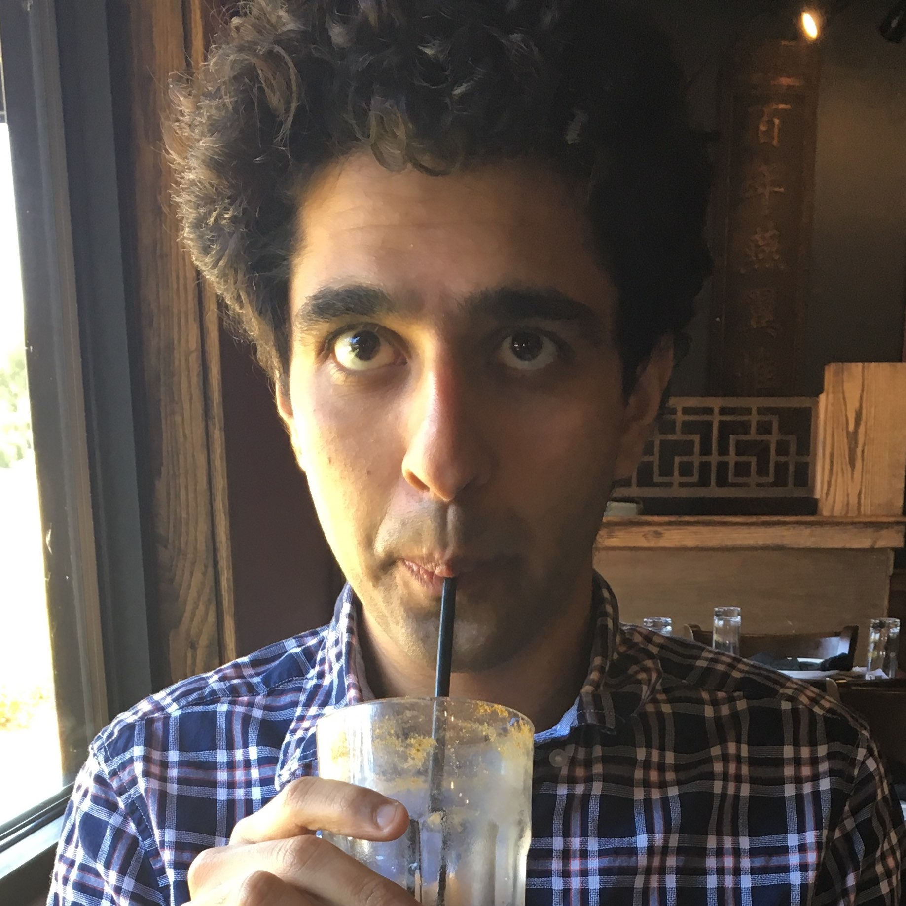
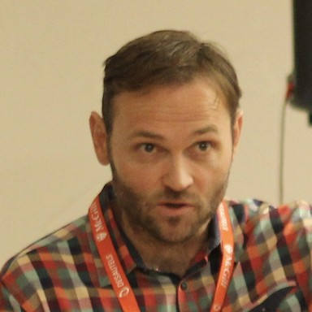
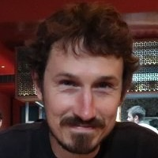
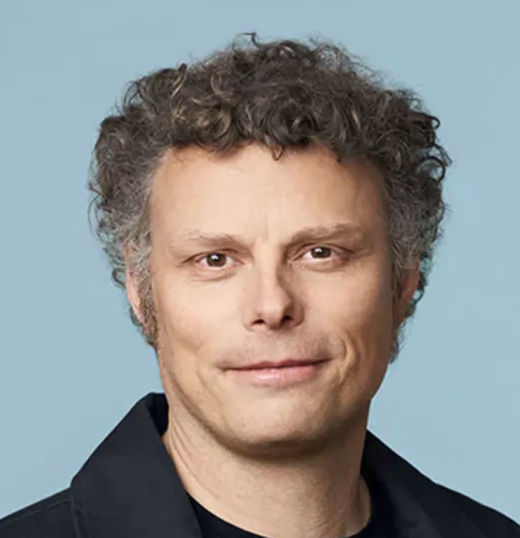

Welcome to the Fourth
Bellairs Workshop on Causality
Causality in the Era of Foundation Models
February 14-21, 2025
Abstract
The development of foundation models, particularly large language models (LLMs), has attracted a flurry of research activity in machine learning. From the lens of causality, it is perplexing to see models that generalize well to all kinds of settings and even domains. What is it that these models learn that grants them this flexibility? Beyond that, causal inference, the science of acting based on data, is gaining relevance to these research directions. In fact, LLMs are now being used as reasoning engines in agents that act in the real world. How can we trust these agents to plan correctly when they are trained only on observational data from the Internet? Are they even able to foresee the effect of actions? The intersection of causality and foundation models remains largely unexplored. This workshop aims to explore this intersection, considering what the field of causality can contribute to these research directions and how recent advancements in foundation models can benefit the field of causality.
- Causal representation learning
- Reusable mechanisms and their ties to causality
- Mechanisms of generalization in foundation models
- Using causality to understand biases in foundation models
- Causal reasoning in large language models
- Causal discovery assisted by foundation models
Participants
-

Kartik Ahuja
(FAIR) -
Tal Arbel
(McGill University) -

Jeremy Barnes
(ServiceNow) -

Vitória Barin Pacela
(FAIR, Mila) -
Riccardo Cadei
(ISTA) -
Nicolas Chapados
(ServiceNow, Mila) -
Alexandre Drouin*
(ServiceNow, Mila) -
Nouha Dziri
(Allen Institute for AI (AI2)) -
Frederick Eberhardt
(Caltech) -
Maxime Gasse
(Microsoft AI, Mila) -
Atticus Geiger
(Pr(Ai)2R Group) -
Tobias Gerstenberg
(Stanford) -
Roger Grosse
(U. Toronto, Anthropic) -
Jason Hartford
(U. of Manchester, Valence) -

Thomas Icard
(Stanford) -
Zhijing Jin
(U. Toronto) -
Sébastien Lachapelle
(Samsung) -
Alexandre Lacoste
(ServiceNow Research) -
Anson Lei
(Oxford) -
Francesco Locatello
(ISTA) -

Sara Magliacane
(U. of Amsterdam) -

Aaron Mueller
(Northeastern University) -
Krikamol Muandet
(CISPA) -

Chris Pal
(Mila, ServiceNow) -
Ingmar Posner
(Oxford) -
Patrik Rezinger
(Max Planck Institute) -
Mátyás Schubert
(U. of Amsterdam) -
Amit Sharma
(Microsoft Research) -
Chandler Squires
(MIT) -
Dhanya Sridhar
(Mila) -

Perouz Taslakian*
(ServiceNow) -
Victor Veitch
(U. of Chicago, Google)

Goals
The Bellairs Workshop on Causality is a gathering of researchers interested in and actively working on various aspects of causality. The workshop is meant to be a week filled with discussions, learnings, and ample opportunities for growing and strengthening our collaboration network. As such, we would consider that the workshop has fulfilled its goal if every attendee returns home:
- having learned of new sub-areas to explore,
- completed their understanding of a topic,
- laid the foundations for a new research idea,
- established new collaborations, and
- made new friends in the field.
Guidelines for open questions
As our focus for this workshop is the development of new ideas and collaborations, we have
planned
the workshop activities so that a significant portion of the program is reserved for discussions
around thought-provoking questions and open problems. For these discussion periods to be more
animated and fruitful, we ask that participants bring with them the ideas that excite them and
the
questions that they would like to see addressed by the community. During these discussion
sessions,
every participant will have the opportunity to briefly present their questions and discussions
on
possible solutions or avenues for their resolution will follow.
In order to facilitate the sharing of open questions and the exchange of ideas, we ask that participants observe the following guidelines:
- Any open problem discussed at the workshop is not to be shared widely with the public without informing their initiator (the person who posed the question at the workshop) and their consent.
- If you wish to work on one of the presented questions after the workshop, we ask that you contact the initiator to make arrangements for collaboration.
- If you publish work that started at Bellairs, please consider acknowledging the Bellairs Workshop on Causality in your publication.
List of open problems (authentication required)
Program
The workshop will take place from February 14th to February 21, 2025.
Participants are expected to arrive on Friday, February 15th. Sessions will start early the next
morning (Saturday)
and the last session will be held on the evening of February 20th.
Each day will consist of morning lectures on relevant topics (9:00-12:00), afternoons will be left open for
collaboration
and discussion, and evenings will be reserved for collaborative work towards open problems (7:00 pm - exhaustion).
Day 1 (morning)
Welcome from the organizers
Alexandre Drouin, Perouz Taslakian
The Many Synergies Between Causality and LLMs
Zhijing Jin
Day 1 (evening)
Open problem presentations
All participants
Day 2 (morning)
Teaching Causal Reasoning to Language Models
Amit Sharma
Inference-Time Abilities of Large Sequence Models
Dhanya Sridhar
Day 2 (evening)
Open Problem Working Session
All participants
Day 3 (morning)
Lectures (TBD)
Day 3 (evening)
Open Problem Progress Report + Working Session
All participants
Day 4 (morning)
Lectures (TBD)
Day 4 (evening)
Open Problem Working Session
All participants
Day 5 (morning)
Lectures (TBD)
Day 5 (evening)
Open Problem Progress Report + Working Session
All participants
Day 6 (morning)
Lectures (TBD)
Logistics
Venue The workshop will be held at the Bellairs Research Institute of McGill University in Barbados, which provides the perfect environment for bringing together a small group of people in a quiet and casual setting. See it on the map.
Airport arrival Bellairs is about a 40 minute drive from the airport, and as many participants land around the same time on the same date, it often makes sense to share a taxi to the institute. To get to the institute, you can pick a taxi outside of the baggage claim area at BGI airport. If the driver does not know where the Bellairs institute is (they usually do), tell them it is beside Folkestone Marine Park in Holetown. Alternatively, we would be happy to arrange your transportation from the airport to Bellairs by booking a driver in advance, who will be waiting for you at the arrivals exit of BGI near the other taxis. To opt-in to this option, you need to indicate this on the Arrival Spreadsheet (please check your email for the link). In all cases, please bring enough USD or BBD to pay for the trip. Many taxis do not accept card payments.
Arriving at Bellairs
The premises are protected by a gate for which you will receive the password a few days in
advance.
Once you arrive, you will find your room assignments and get the key from a key box for which we
will also communicate a password a few days in advance.
IMPORTANT: If you arrive or depart outside of the workshop dates (February 14-21), you need
to book your own accommodation.
It might be possible that Bellairs has available rooms for you to stay at during this period,
but you must contact
Bellairs directly to book your accommodation outside the workshop dates.
We cannot guarantee availability outside the dates assigned to our group.
Accommodation The Bellairs research institute is located right on the beach in the Folkestone Marine Park. The facilities are minimalistic, but comfortable, and the beach is right outside the door. Given the limited number of rooms available, most participants will need to be paired. To get a sense of the premises, check out the Bellairs website or take a look at the pictures from last year.
Meals Buffet-style meals will be available on the first morning for breakfast and every day for dinner. These will be served in the outdoor classroom from 8-9 am and 6-7 pm, respectively. You will be charged for these according to the number of nights you spend at Bellairs. For the subsequent breakfasts, we will buy groceries based on the preferences of participants, and the amount will be included in the registration fee. Lunch is on your own. There are plenty of options nearby and we usually walk somewhere as a group.
What to bring In terms of clothing, you should take into consideration that the lecture hall is outdoors and that the weather will be quite hot. Do not forget to bring your bathing suit, beach towel, and snorkeling equipment since Bellairs is located right in front of a coral reef. You should also bring soap, shampoo, sunscreen, and mosquito repellent. Bringing ear plugs is also a good idea if you are a light sleeper as there can be noise from the nearby road or park in the morning.
Currency Currency: The local currency is the Barbadian Dollar (BBD), but you can pay in USD everywhere (1 USD ~ 2 BBD). You can pay by credit card almost everywhere, but it’s safe to carry cash. In fact, it is encouraged to bring some cash with you as many places (e.g. food carts and taxis) do not take payments with cards.
For questions please contact Alexandre Drouin or Perouz Taslakian